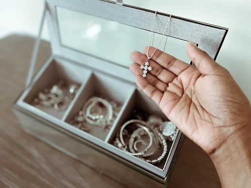

Website bán trang sức uy tín - chính hãng
Theo Marcus Young, phó giáo sư khoa học vật liệu và kỹ thuật tại đại học Bắc Texas, Mỹ, hiện tượng rỗ và đổi màu của trang sức do một tế bào mạ điện gây ra các phản ứng oxy hóa-khử tự phát. Những phản ứng này hình thành trên bề mặt, khiến kim loại không đẹp, sáng bóng nữa. Các sản phẩm làm từ đồng dễ xảy ra phản ứng này nhất, sau đó đến bạc. Bảo quản bạc cùng các kim loại khác có thể khiến bạc bị oxy hóa nhanh hơn. Tốc độ oxy hóa của một trang sức phụ thuộc vào tỷ lệ phần trăm hợp kim hoặc lượng từng kim loại tạo nên sản phẩm cuối cùng. Judith Anderson, một nhà thẩm định đồ trang sức chuyên nghiệp cho rằng bạch kim sẽ không bị xỉn màu vì nó không có kim loại thường bên trong, nhưng các loại vàng khác nhau có các lớp trang trí bằng chất liệu khác nhau.
Các biến thể vàng khác như vàng hồng, thường không bao gồm niken, nhưng có nhiều đồng hơn bạc, trong khi vàng xanh có lượng bạc cao hơn đồng. Tuy nhiên, ngành công nghiệp trang sức không sử dụng một tỷ lệ tiêu chuẩn để tạo ra vàng. Người thợ thủ công khác nhau có công thức riêng của họ khi tạo ra sản phẩm. "Các công ty lớn bán vàng có công thức cụ thể để sản xuất. Màu sắc là kết quả của việc thay đổi tỷ lệ hàm lượng đồng và bạc", Anderson nói. Độ cứng khác nhau giữa các kim loại có thể gây ra xước. Ví dụ, bạch kim không bị oxy hóa, nhưng có thể bị trầy xước vì mềm hơn vàng. Vì vậy, Anderson khuyên khi cất giữ đồ trang sức bằng bạch kim và vàng cùng nhau, vàng có thể làm xước bạch kim, khiến trang sức xỉn màu.
Xây dựng website bán trang sức
Điện thoại: 0329080926
Email: baoquochoa2@gmail.com